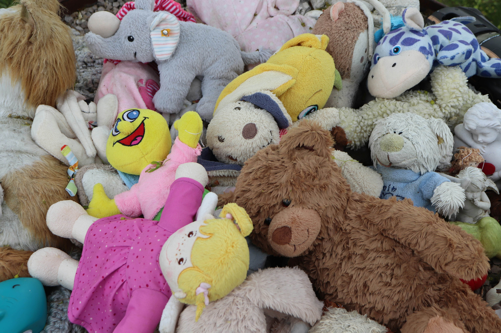

Tanto roupas, quanto alimentos e objetos podem ajudar pessoas em situação de vulnerabilidade.
Itens parados ganham uma nova utilidade em vez de serem descartados. Desta forma, ajudando alguém e também o meio ambiente.
O projeto aproxima quem quer ajudar, de quem realmente precisa de ajuda.
Cada contribuição conta. Mesmo uma única doação faz a diferença.
Encontre pontos de doação próximos a você. De forma rápida e prática.
Promover a solidariedade, tornando as doações mais simples, acessíveis e conectadas à comunidade.
Atuamos conectando pessoas a pontos de doação de forma simples e acessível.
Catalogamos locais de contribuição, facilitamos o acesso às informações e divulgamos necessidades da comunidade para incentivar novas doações.